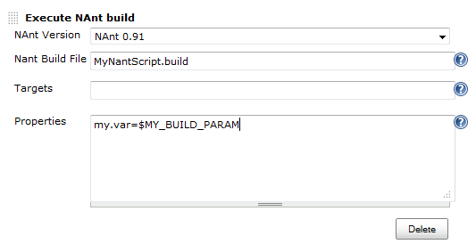

NAntEnv: A Better Way to Integrate NAnt with Jenkins
Table of Contents
1 Use NAnt by NAnt plugin of Jenkins
2 2 ways to load build parameters
To pass build parameters to NAnt script, usually there are 2 ways to achieve it:
2.1 Pass by property through NAnt plugin
After adding a NAnt build step, click the "Advanced" button, a panel will show up.
You can fill desired NAnt properties inside; if you need to access build parameters, you can use $BUILD_PARAM.

2.2 Load property from environment variable
Jenkins will set environment variable according to given build parameters. So you can query them inside NAnt scripts:
<if test="${environment::variable-exists('VAR_NAME')}"> <property name="var.name" value="${environment::get-variable('VAR_NAME')}"/> </if>
This is handy. Adding 1 configuration parameter just needs to copy above 3 lines.
But soon you will find these 3 similar lines scatterring every where.
Especially when your NAnt scripts share lots of common logic, you want to extract all these setting up code into a common.include.
Months later, you realize it becomes a monster with hundreds of these "test-then-set" lines.
3 Convention over configuration
Ctrl+c Ctrl+v is the root of every evil.
In our build script, we have following conventions:
- All Jenkins build parameters are in uppercase, separated by underscore, e.g.:
FULL_ENSEMBLE_REGISTRATION. - All NAnt script variables are in lowercase, separated by dot, e.g.:
full.ensemble.registration.
When pass build parameters, we load it from environment variables in NAnt scripts. What it does is transforming the uppercase form into the lowercase form.
This gives us opportunities to eliminate those duplications: let NAnt task do the transformation, without breaking existing code or current script guidelines.
3.1 Load environment variables into NAnt properties
Here is the LoadEnvTask project. 4 To use it, call load-environment task in your NAnt script:
<target name="MyTarget"> <load-environment verbose="true"/> <echo message="my.var loaded from environment variable: ${my.var}"/> </target>
And you will see from the log:
systemdrive = C:
programw6432 = C:\Program Files
…
my.var = some value
There are other options like specifying which delimeter -s to replace, whether to convert everything tolower, from which target, process, user or machine, to load environment variables.
Although all environment variables will be loaded into NAnt properties, and many of them are useless. But usually there is no confliction, so I didn't add a filter to it. (If you need, PRs are welcome.)